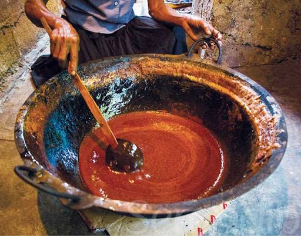
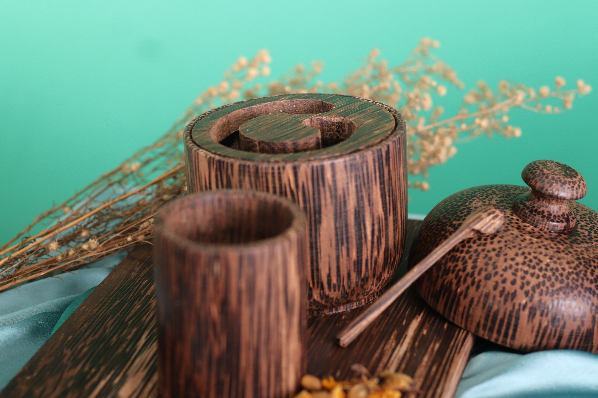
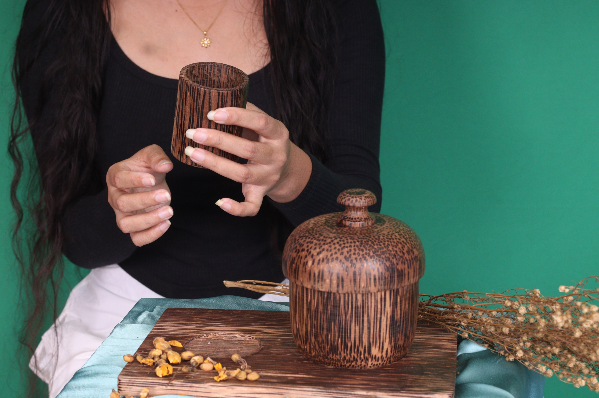
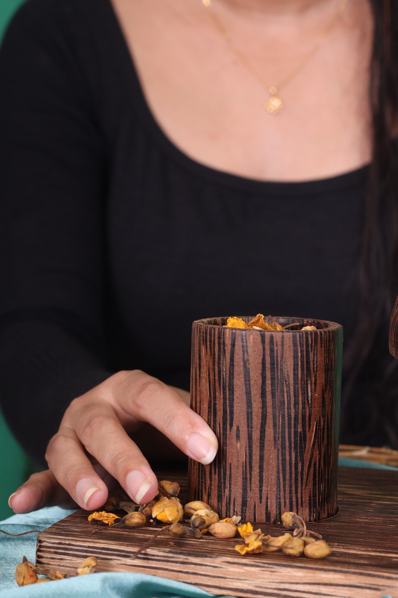
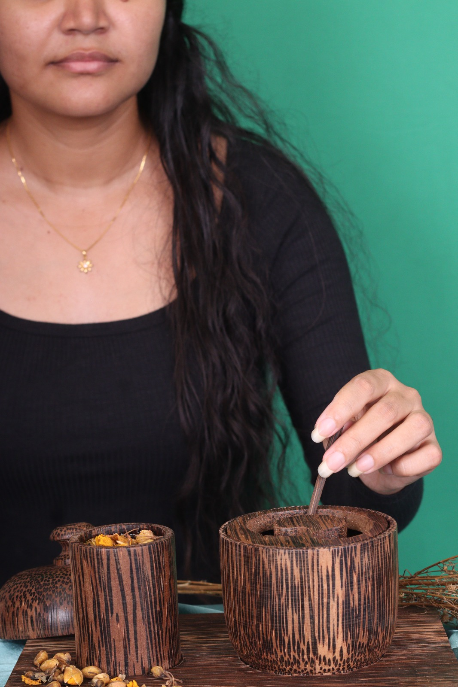
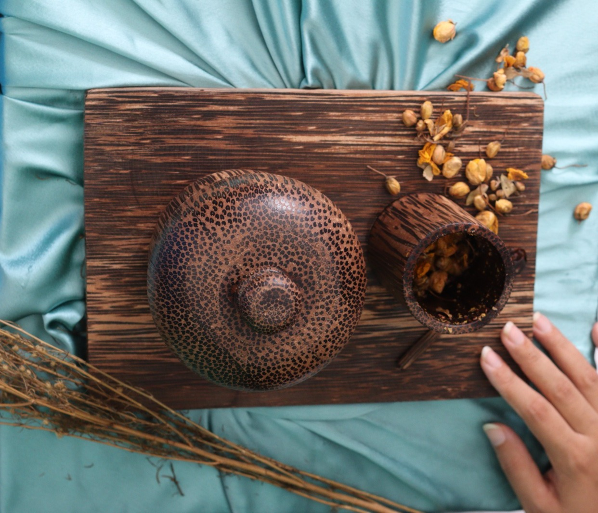

-2.png)
ENTER THE RITUAL
Kithul is more than a taste.
Behind every piece of Kithul jaggery is a tree, a maker, and hours of patience. Kala transforms this story into a ritual of slowing down, noticing and appreciating.
THE STORY — The Taste of Time
Where the story begins
The story begins with the Kithul tree.
Its sap is carefully collected through traditional knowledge and patience, then transformed into Kithul jaggery through hours of skilled labour.
The maker
What reaches the consumer as a simple piece of jaggery carries knowledge that has been passed through practice, patience and experience.
Kala brings attention back to the people behind the product — the makers whose skills make this taste possible.

The end of the tree's productive life
When a Kithul tree can no longer provide sap, its story does not have to end.
The wood can be transformed into something that tells its journey, So this ritual has become a bridge that connects the story of the tree.

THE RITUAL
Kala turns the simple act of enjoying Kithul jaggery and herbal tea into a sequence of teachings.
PRESENCE
I notice

PATIENCE
I wait

APPRECIATION
I understand

GRATITUDE
I value

The ritual is an invitation to slow down and become aware of the present moment. Each action connects the senses with the story of the KitHul tree, the maker and the time behind the jaggery.
THE KĀLA RITUAL SET
A handcrafted set designed to hold the complete Kithul slow-food experience.
THE KITUL WOOD BOWL
A handcrafted bowl that holds the Kithul jaggery at the centre of the ritual.
THE SPIRAL LID
A functional lid that transforms serving into an intentional act. The spiral guides the spoon towards the jaggery, encouraging the user to take only what is needed.
THE SCRAPING SPOON
A small spoon designed specifically to collect Kithul jaggery through the spiral pathway.
THE HERBAL TEA Cup
A Kithul wood cup designed to hold the accompanying herbal infusion and bring the warmth, texture and character of the material into the ritual.
THE TRAY
A serving surface that brings the elements together and creates a dedicated space for the ritual.
KITHUL JAGGERY
Choose Your Infusion
IRAMUSU | RANAWARA | BELIMAL
A traditional herbal drink commonly prepared in Sri Lankan households.